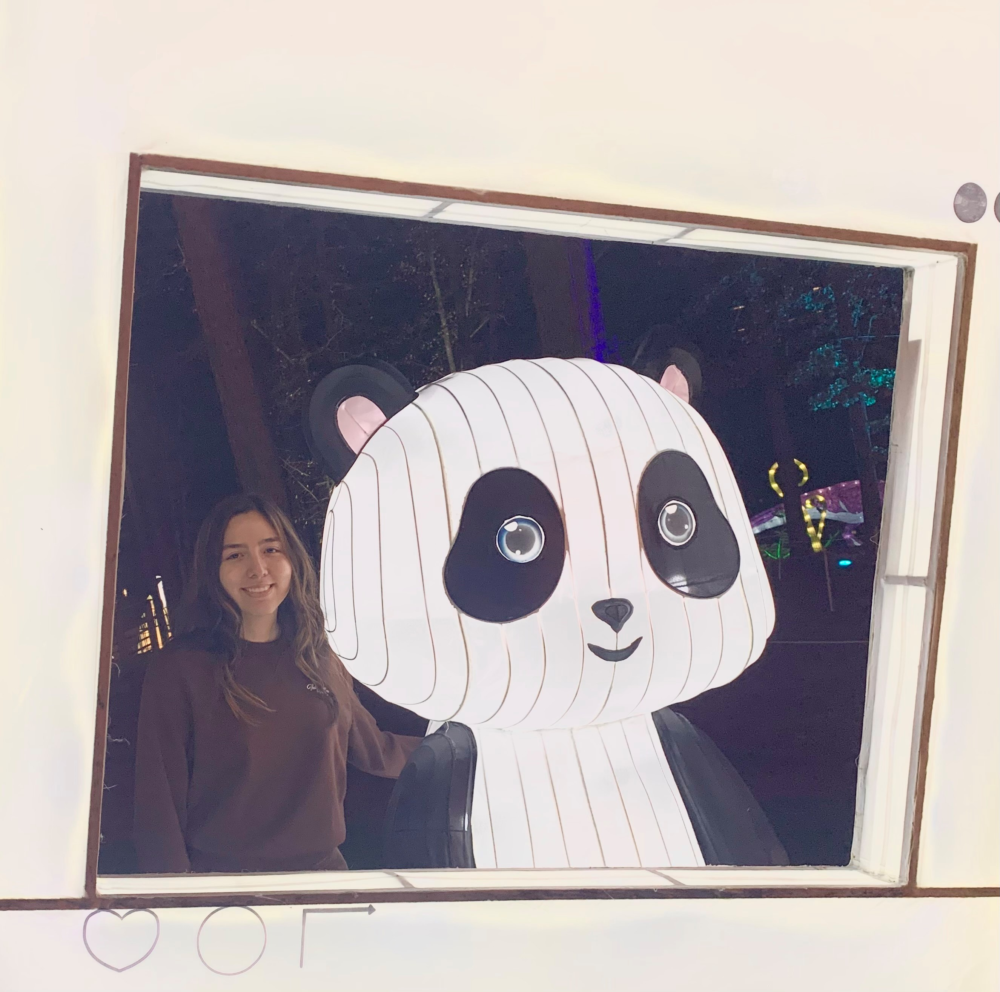

Junior CS Student at the Univeristy of North Carolina at Chapel Hill
About me
A bit more about me besides my academic status, I'm from a small town called Eden, North Carolina and I love video games, skincare, and the gym. At school I'm proudly involved in Semillas de Unidad, Women in CS, and CS+Social Good. As of now I am the most involved in Semillias de Unidad where I have the opporunity to give back to the Hispanic community in Chapel Hill by continually fundraising for a local church, tutoring a K-12 student weekly, and hosting biweekly Spanish conversation hours on campus to help other students practice their Spanish in a welcoming non-classroom environment.
Returning back to the topic of computer science, I'm currently looking for summer 2023 internships and I plan to graduate in May 2023. My favorite languages at the moment are Java, HTML, & CSS. Thanks for reading this and getting to know me better! :)
Projects
- 1. Java Password Manager
- - In a past Data Structures class, I created a password manager which I considered the most practical and useful project we created using hashmaps
- 2. This website :)
- - I created this website from scratch after watching many many hours of youtube HTML and CSS tutorials. I plan to keep adding to this site as my knowledge in web development grows